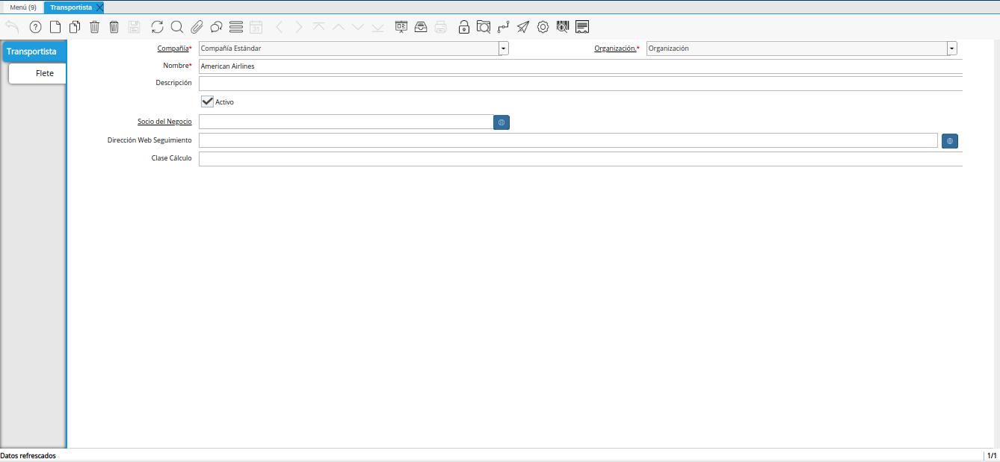
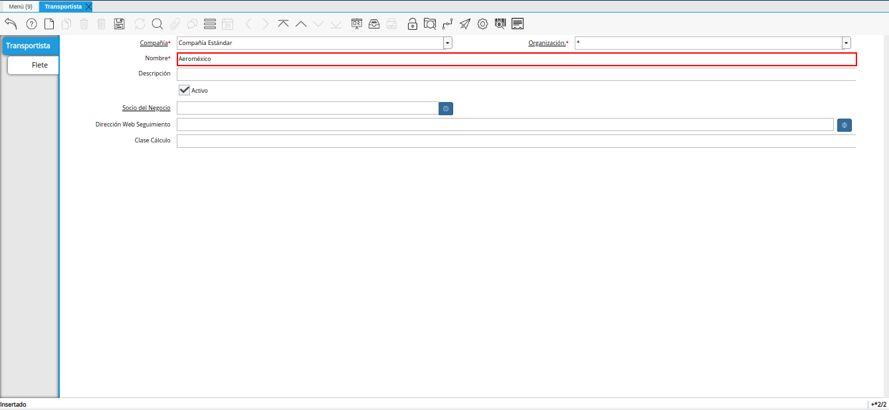
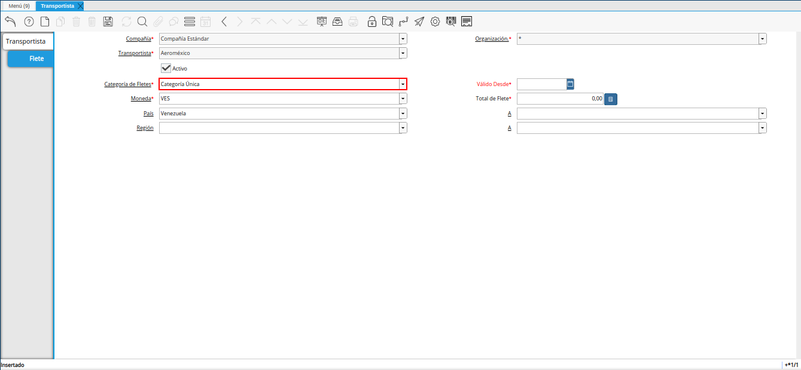
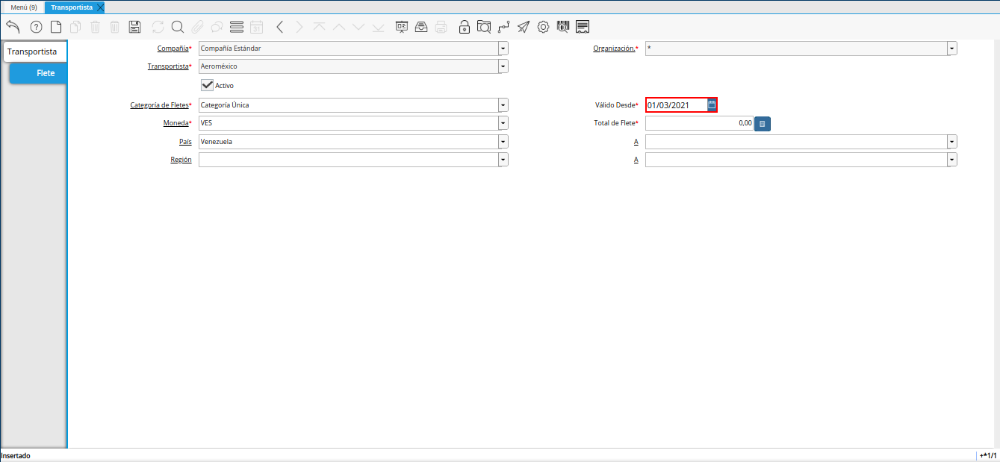
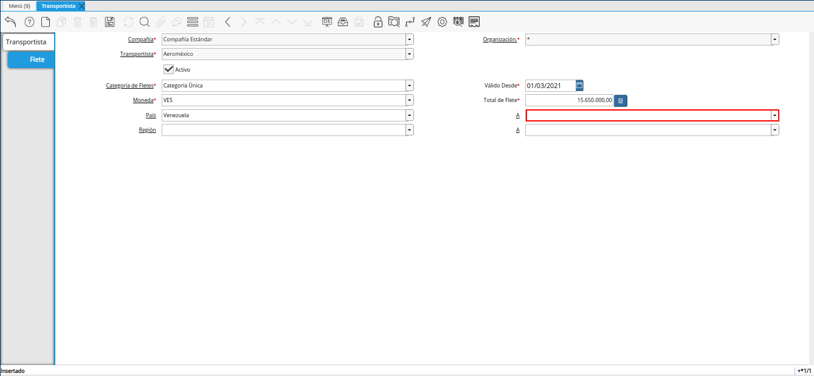
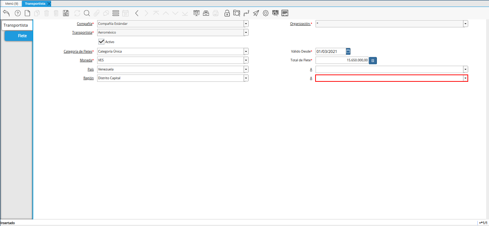

2.5.1. Registro de Transportista¶
Ubique y seleccione en el menú de ADempiere, la carpeta “Gestión de Materiales”, luego seleccione la carpeta “Reglas de Gestión de Materiales”, por último seleccione la ventana “Transportista”.

Imagen 1. Menú de ADempiere
Podrá visualizar la ventana “Transportista”, con los diferentes registros de transportistas.

Imagen 2. Ventana Transportista
Seleccione el icono “Registro Nuevo”, ubicado en la barra de herramientas de ADempiere y proceda al llenado de los campos correspondientes.

Imagen 3. Icono Registro Nuevo
Seleccione en el campo “Organización”, la organización para la cual requiere realizar el registro.

Imagen 4. Campo Organización
Seleccione en el campo “Nombre”, el nombre correspondiente al registro que se encuentra realizando.

Imagen 5. Campo Nombre
Introduzca en el campo “Descripción”, una breve descripción referente al registro que se encuentra realizando.

Imagen 6. Campo Descripción
Seleccione en el campo “Socio del Negocio”, el socio del negocio correspondiente al registro que se encuentra realizando.

Imagen 7. Campo Socio del Negocio
Seleccione en el campo “Dirección Web Seguimiento”, la dirección web para el seguimiento de entrega.

Imagen 8. Campo Dirección Web Seguimiento
Introduzca en el campo “Clase Cálculo”, la clase utilizada para calcular medidas.

Imagen 9. Campo Clase Cálculo
Seleccione el icono “Guardar Cambios”, para guardar el registro de los campos de la ventana “Transportista”.

Imagen 10. Icono Guardar Cambios
Seleccione la pestaña “Flete” y proceda al llenado de los campos correspondientes.

Imagen 11. Pestaña Flete
Seleccione en el campo “Categoría de Fletes”, la categoría de fletes para el registro que se encuentra realizando.

Imagen 12. Campo Categoría de Fletes
Introduzca en el campo “Válido Desde”, la fecha de inicio de validez del registro que se encuentra realizando.

Imagen 13. Camp Válido Desde
Seleccione en el campo “Moneda”, la moneda correspondiente al registro que se encuentra realizando.

Imagen 14. Campo Moneda
Introduzca en el campo “Total del Flete”, el monto total del flete correspondiente al registro que se encuentra realizando.

Imagen 15. Campo Total del Flete
Seleccione en el campo “País”, el país de origen del viaje.

Imagen 16. Campo País
Seleccione en el campo “A”, el país de destino del viaje.

Imagen 17. Campo A
Seleccione en el campo “Región”, la región de origen del viaje.

Imagen 18. Campo Región
Seleccione en el campo “A”, la región de destino del viaje.

Imagen 19. Campo A
Seleccione el icono “Guardar Cambios”, ubicado en la barra de herramientas de ADempiere para guardar el registro de los campos de la pestaña “Flete”.
Imagen 20. Icono Guardar Cambios